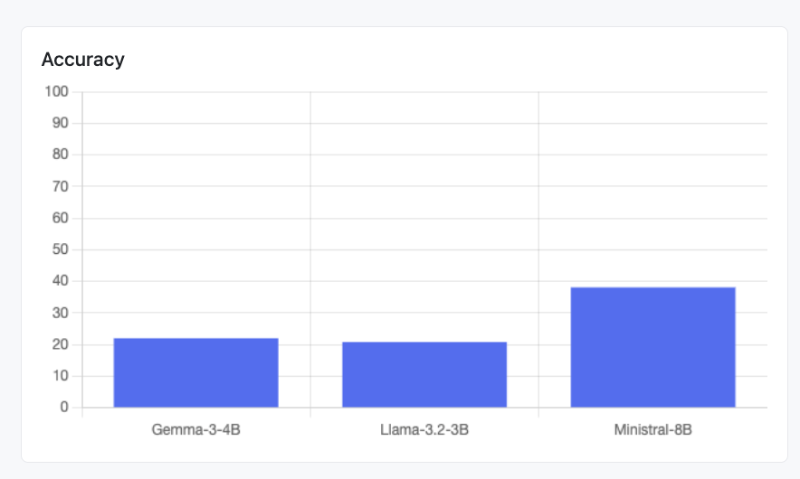
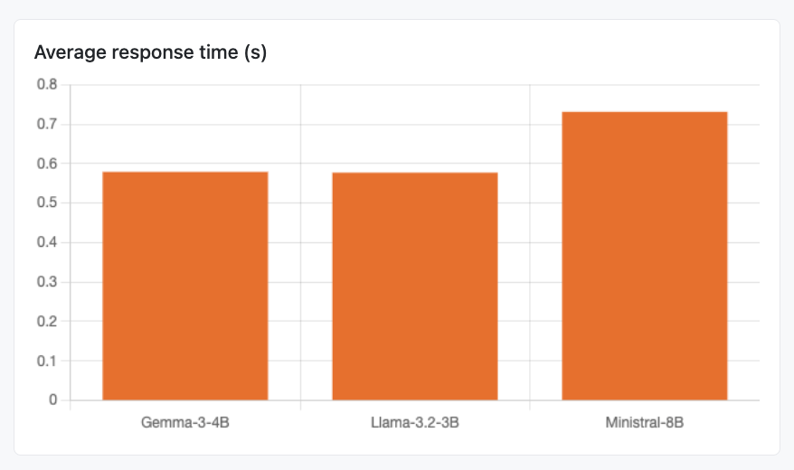
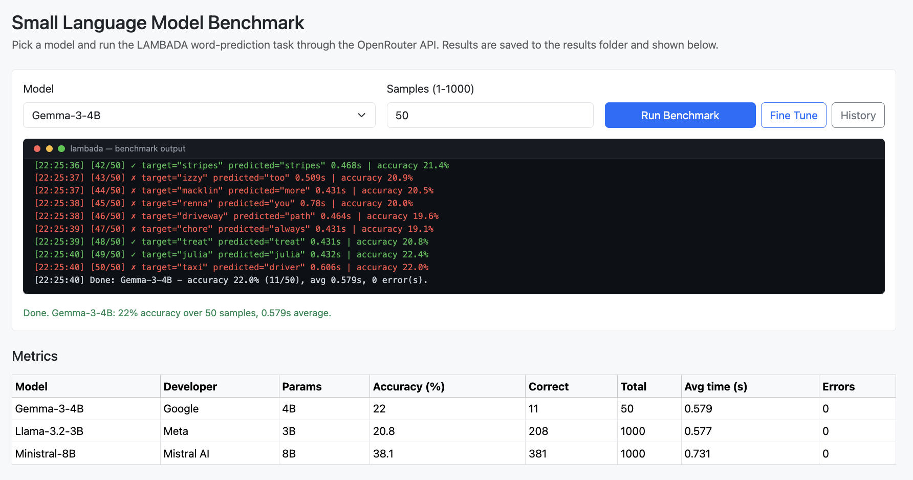
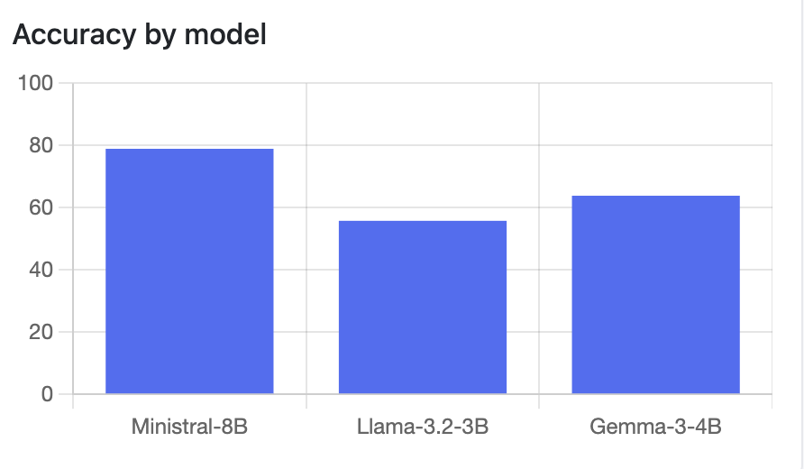
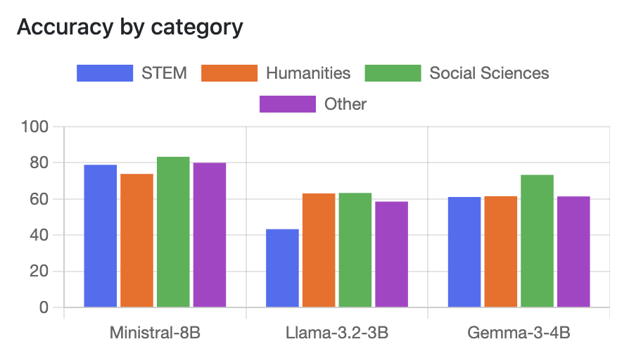
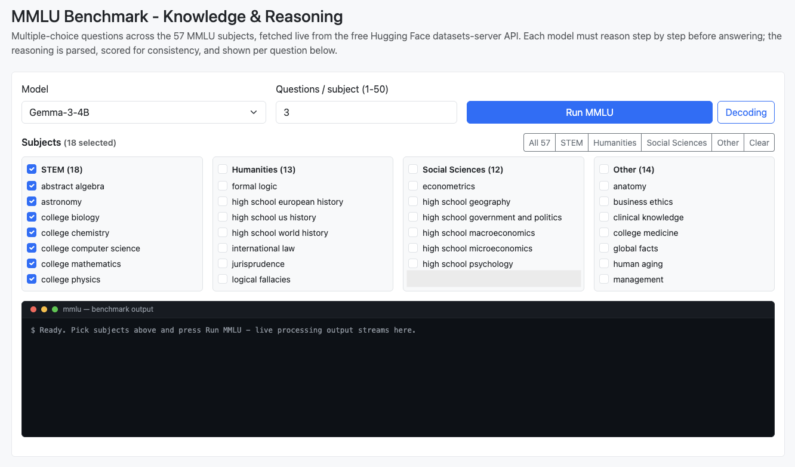
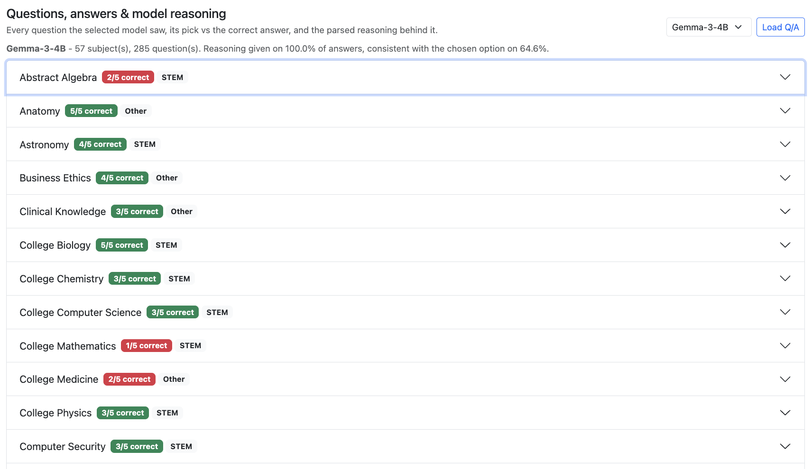
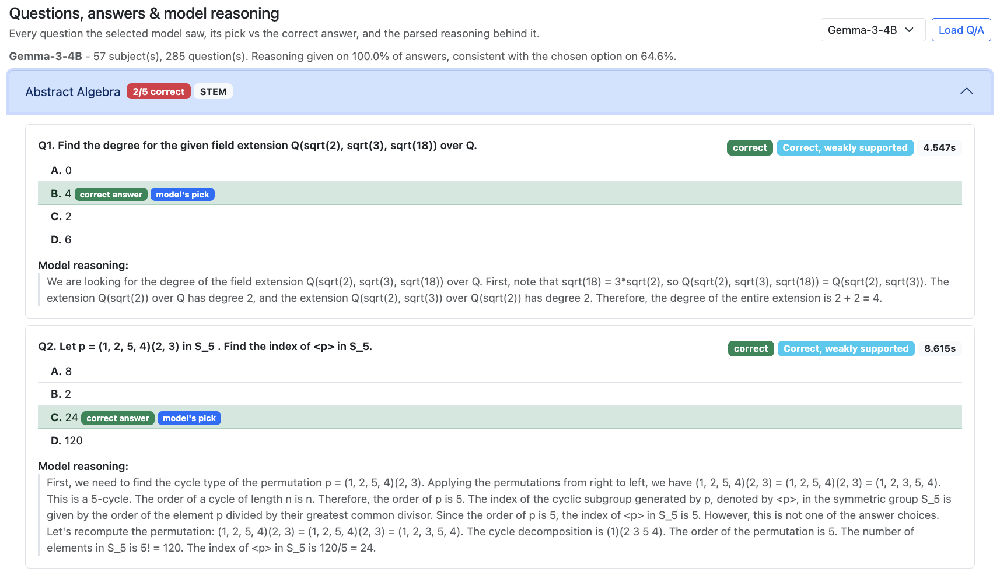

Evaluating small language models on long-range word prediction (LAMBADA) and multi-subject knowledge & reasoning (MMLU)
Submitted to: Prof. Anna Corazza
Submitted by: Francesco Ventimiglia, Danilo Rodriguez, Rohan Baidya
Github link: https://github.com/ronvoy/gen-ai
Site Link: https://unina.cc/gen-ai
| # | Model | Developer | Parameters | OpenRouter id | Architecture | Key Technique |
|---|---|---|---|---|---|---|
| 1 | Gemma-3-4B | 4B | google/gemma-3-4b-it |
Dense decoder-only transformer with interleaved local/global attention | Knowledge distillation + local/global attention interleaving | |
| 2 | Llama-3.2-3B | Meta | 3B | meta-llama/llama-3.2-3b-instruct |
Dense decoder-only transformer with Grouped Query Attention | Compact dense transformer |
| 3 | Ministral-8B | Mistral AI | 8B | mistralai/ministral-8b-2512 |
Decoder-only transformer with Sliding Window Attention | Sliding Window Attention + GQA |
Working technique - Knowledge distillation + local/global attention interleaving:
Key properties:
Working technique - Compact dense transformer:
Key properties:
Working technique - Sliding Window Attention + GQA:
Key properties:
| Split | File | Passages | Purpose |
|---|---|---|---|
| Test | lambada_test_plain_text.txt | 5,153 | Primary evaluation |
| Development | lambada_development_plain_text.txt | 4,869 | Validation and tuning |
| Control Test | lambada_control_test_data_plain_text.txt | 5,000 | Baseline, unfiltered |
| Rejected | rejected_plain_text.txt | 11,941 | Passages cut during curation |
| Training Novels | train-novels/ (16 genres) | 2,662 novels | Pre-training material |
| Vocabulary | lambada-vocab-2.txt | 112,746 entries | Reference vocabulary |
| Property | Value |
|---|---|
| Source corpus | BookCorpus (unpublished novels) |
| Language | English |
| Task type | Word prediction |
| Curation criterion | Target guessable from full context only |
| First published | ACL 2016 (Paperno et al.) |
| Metric | Definition | Better |
|---|---|---|
| Exact-match accuracy | correct / total after lowercasing and stripping punctuation | Higher |
| Average response time | Mean wall-clock time per API call | Lower |
| Error rate | errors / total (timeouts, failures) | Lower |
| Throughput | total / total wall-clock time | Higher |
| Parameter | Range | Effect |
|---|---|---|
| Temperature | 0.0 - 2.0 | Higher adds randomness; 0.0 is greedy and deterministic |
| Top-p | 0.0 - 1.0 | Nucleus sampling cutoff; lower keeps only the likeliest tokens |
| Max tokens | 1 - 128 | Cap on answer length; a single word needs very few |
| Few-shot examples | 0 - 5 | Worked examples added to the prompt to set the format |
| Frequency penalty | -2.0 - 2.0 | Discourages repeating tokens |
| Presence penalty | -2.0 - 2.0 | Encourages introducing new tokens |
Presets (see Section 6): Optimal (greedy decoding, five worked examples - most reliable accuracy), Normal (balanced defaults), Best Performance (trimmed token and example budget for the fastest, cheapest runs).
Latest saved metrics per model on the test split.
| Model | Accuracy (%) | Correct | Total | Avg Latency (s) | Errors |
|---|---|---|---|---|---|
| Gemma-3-4B | 22.0 | 11 | 50 | 0.579 | 0 |
| Llama-3.2-3B | 20.8 | 208 | 1000 | 0.577 | 0 |
| Ministral-8B | 38.1 | 381 | 1000 | 0.731 | 0 |
Best accuracy: Ministral-8B at 38.1 percent. Fastest: Llama-3.2-3B at 0.577 s per query, with Gemma-3-4B essentially tied at 0.579 s.
Accuracy per model:

Average response time per model:

The LAMBADA run panel: model and sample-count inputs, Run Benchmark and Fine Tune (presets) buttons, the live terminal streaming per-sample processing output (green = correct prediction, red = wrong), and the metrics table below with the latest saved results for all three models.

How the MMLU benchmark runs in this project, from a click on "Run MMLU" (or ./run_mmlu.sh) to the ranking table, charts, and per-question reasoning shown in the web app. For every question the model must first write short step-by-step reasoning and then commit to one of four options (A-D); both the final letter and the reasoning text are parsed and evaluated.
| # | Step | What happens | Where (file / function) |
|---|---|---|---|
| 1 | Parameters | Read subjects, questions per subject, models, decoding params (all documented at the top of the script and shell runner) | evaluate_slm_mmlu.py (RUN PARAMETERS), run_mmlu.sh |
| 2 | Trigger | User clicks Run MMLU, runs ./run_mmlu.sh, or python evaluate_slm_mmlu.py |
passenger_wsgi.py (/mmlu/run) or run_mmlu_evaluation |
| 3 | Resolve subjects | Turn "all", a group preset, or a list into valid subject names | resolve_subjects |
| 4 | Fetch questions | Download the first 100 test rows per subject from the free Hugging Face datasets-server API (cais/mmlu, fallback tasksource/mmlu); no API key needed | _download_subject |
| 5 | Cache | Store rows in _rsc/mmlu-dataset/<subject>.json so reruns are offline and repeatable |
fetch_subject_questions |
| 6 | Sample | Take the first N questions per subject (deterministic, no randomness) | fetch_subject_questions, load_mmlu_tasks |
| 7 | Build prompt | Chain-of-thought prompt: one worked example, strict Reasoning: then Answer: <letter> output format |
build_mmlu_prompt, WORKED_EXAMPLE |
| 8 | Query model | Send the prompt to the chosen model through OpenRouter | query_model_mmlu (HTTP POST) |
| 9 | Parse | Extract the answer letter AND the reasoning text (handles Reasoning:/Answer:, <think> blocks, "the answer is (B)", bare letters, truncation) |
parse_mmlu_response |
| 10 | Evaluate reasoning | Score the reasoning: is it present, how long, does it actually support the chosen option; assign a verdict | analyze_reasoning |
| 11 | Compare | Exact match: predicted letter equals the correct letter | evaluate_model_mmlu |
| 12 | Aggregate | Overall / per-subject / per-category accuracy, latency, errors, reasoning rates | evaluate_model_mmlu |
| 13 | Rank | Per-dimension ranks and composite score across all evaluated models | build_mmlu_summary |
| 14 | Save | Write results/<model>_mmlu.json and results/summary_mmlu.json |
run_mmlu_evaluation / run_mmlu_benchmark |
| 15 | History | Append the run (models, subjects, question count, params) to history | passenger_wsgi.append_history |
| 16 | Present | Ranking table, accuracy charts, and the per-question Q/A + reasoning accordion | templates/mmlu.html (Chart.js) |
| Component | File | Role |
|---|---|---|
| Run parameters | evaluate_slm_mmlu.py (top), run_mmlu.sh (top) |
Subject selection ("all", group presets, or explicit list), questions per subject (1-100), models, decoding params - every option listed in comments |
| Subject catalogue | MMLU_SUBJECTS, SUBJECT_GROUPS, CATEGORY_LABELS |
The 57 subjects mapped to their official categories; group presets derived from the mapping |
| Dataset fetcher | fetch_subject_questions, _download_subject |
Free HF datasets-server API client with source fallback and local JSON cache |
| Task loader | load_mmlu_tasks |
Flattens subjects x questions into one ordered task list |
| Prompt builder | build_mmlu_prompt, WORKED_EXAMPLE |
Chain-of-thought prompt with a worked example enforcing a parseable format |
| Model client | query_model_mmlu |
OpenRouter chat-completions call with timing and error capture |
| Response parser | parse_mmlu_response |
Splits a raw response into (answer letter, reasoning text) |
| Reasoning analyzer | analyze_reasoning |
Heuristic quality check: presence, word count, consistency, verdict |
| Evaluator | evaluate_model_mmlu |
Runs all tasks for one model; aggregates accuracy and reasoning metrics |
| Ranker | build_mmlu_summary |
Per-dimension ranks + composite score across models |
| CLI runner | run_mmlu_evaluation, _parse_cli, run_mmlu.sh |
One-shot terminal pipeline: setup, install, run, print ranking |
| Web routes | passenger_wsgi.py: /mmlu, /mmlu/run, /mmlu/metrics, /mmlu/details, /progress/<job_id> |
Online runs, live progress feed, ranking JSON, and the per-question detail feed |
| Web page | templates/mmlu.html |
Subject picker with presets, decoding sliders + presets, live terminal, ranking table, charts, Q/A + reasoning viewer |
| Metric | Definition |
|---|---|
| Accuracy | correct letters / total questions (exact match) |
| Category accuracy | Accuracy aggregated over STEM / Humanities / Social Sciences / Other |
| Subject accuracy | correct / total per individual subject |
| Average response time | Mean wall-clock seconds per API call |
| Errors | Count of failed or timed-out API calls |
| Reasoning rate | Share of answers that came with a non-trivial explanation (>= 5 words) |
| Reasoning consistency | Share of answers whose reasoning actually supports the chosen option (names the letter or reuses the choice's key words) |
| Avg reasoning words | Mean length of the parsed reasoning text |
| Composite score | 0.70 x accuracy + 0.15 x reasoning consistency + 0.15 x relative speed (fastest avg time / model's avg time) |
| Verdict | Meaning |
|---|---|
| sound | Correct answer, and the reasoning clearly supports it |
| right-weak-link | Correct answer, reasoning present but does not clearly support the pick |
| lucky-guess | Correct answer with no real reasoning |
| flawed-reasoning | Reasoned its way to a wrong answer |
| blind-guess | Wrong answer and no reasoning |
| no-answer | No A-D letter could be parsed (API error or malformed output) |
Latest full run: all 57 subjects x 5 questions = 285 questions per model, zero API errors.
| Rank | Model | Accuracy (%) | STEM | Human. | Social | Other | Reasoning consist. (%) | Avg words | Avg time (s) | Composite |
|---|---|---|---|---|---|---|---|---|---|---|
| 1 | Ministral-8B | 78.9 | 78.9 | 73.9 | 83.3 | 80.0 | 69.1 | 54.1 | 1.537 | 0.731 |
| 2 | Llama-3.2-3B | 55.8 | 43.3 | 63.1 | 63.3 | 58.6 | 59.7 | 61.8 | 0.768 | 0.630 |
| 3 | Gemma-3-4B | 63.9 | 61.1 | 61.5 | 73.3 | 61.4 | 64.6 | 59.3 | 2.502 | 0.590 |
Models are ranked per dimension (1 = best) on accuracy, speed, and reasoning consistency, then ordered by the composite score. Accuracy dominates the composite (70%); reasoning quality and latency (15% each) break ties, which mirrors how small language models are picked in practice: quality first, then cost and latency.
Overall accuracy per model, driving the composite ranking:

Subject-category accuracy (STEM / Humanities / Social Sciences / Other) per model:

The MMLU run panel: model and questions-per-subject inputs, subject picker with category presets, and the live terminal that streams processing output below the input fields before and during a run.

The Q/A section lists every question the selected model saw, grouped per subject with a correct-count badge and category tag:

Expanding a subject shows each question with the model's pick vs the correct answer, its parsed reasoning, the reasoning verdict, and per-question latency:

Both benchmark pages expose one-click presets over the decoding parameters. They control decoding, not model weights.
PRESETS in config.py) | Preset | Temperature | Top-p | Max tokens | Few-shot | Intent |
|---|---|---|---|---|---|
| Optimal | 0.0 | 1.0 | 16 | 5 | Greedy decoding with the most worked examples - most reliable accuracy |
| Normal | 0.3 | 0.9 | 32 | 3 | Balanced default |
| Best Performance | 0.0 | 1.0 | 8 | 2 | Trimmed token and example budget - fastest, cheapest runs |
MMLU_PRESETS in config.py) | Preset | Temperature | Top-p | Max tokens | Intent |
|---|---|---|---|---|
| Optimal | 0.0 | 1.0 | 512 | Most reasoning room - most reliable accuracy |
| Normal | 0.2 | 0.95 | 384 | Matches the defaults |
| Best Performance | 0.0 | 1.0 | 192 | Caps the reasoning budget so runs finish faster |